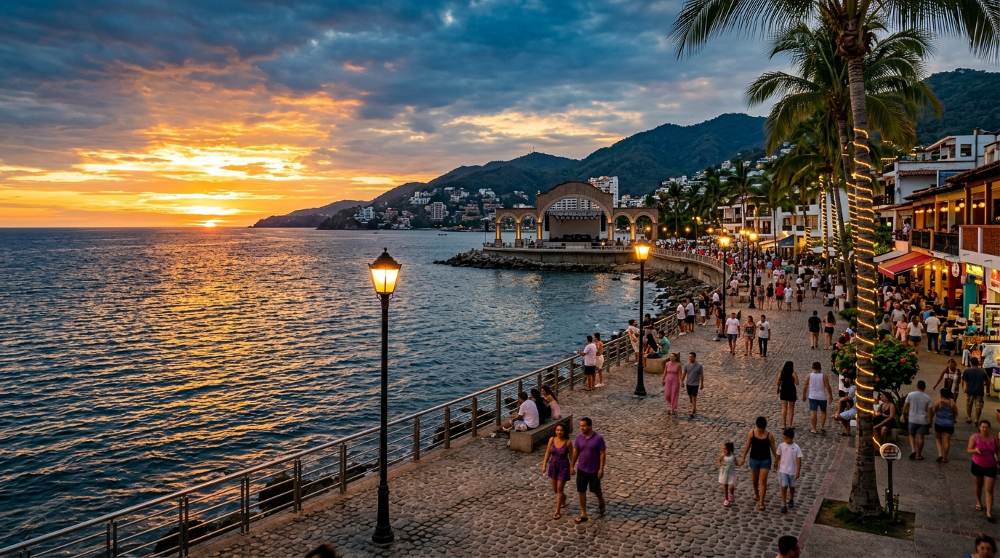
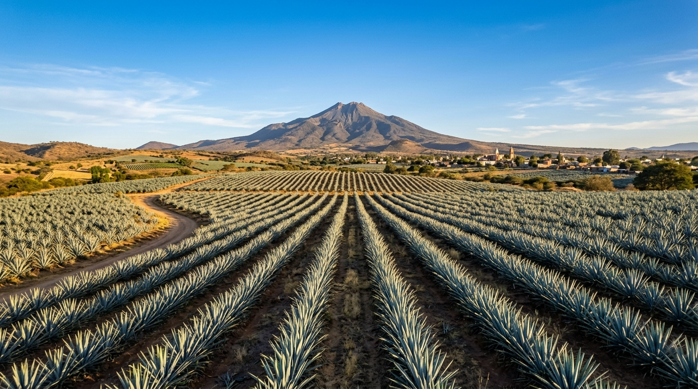
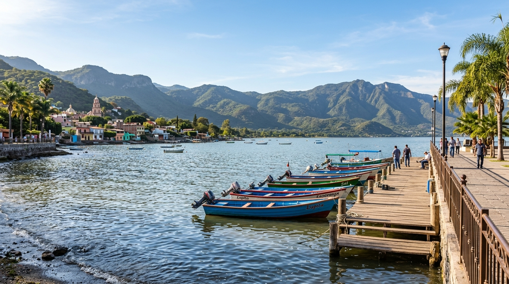
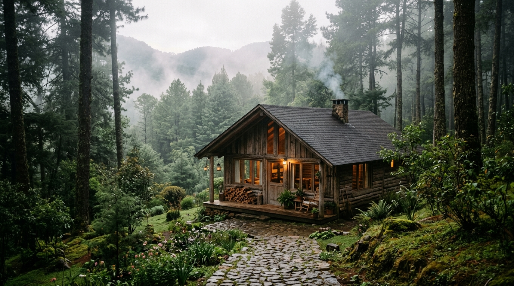

Caminar
Recorre el Centro Histórico, mira las torres de la Catedral y cruza plazas donde la ciudad cuenta su historia.
20° 40′ N · 103° 21′ O
Tradición viva, arquitectura de cantera y una energía creativa que se disfruta entre plazas, mercados y sobremesas.
Capital de Jalisco · MéxicoLa Perla Tapatía
Guadalajara mezcla memoria y movimiento: edificios históricos, barrios llenos de carácter, diseño contemporáneo y sabores que forman parte de la identidad mexicana.
Recorre el Centro Histórico, mira las torres de la Catedral y cruza plazas donde la ciudad cuenta su historia.
Birria, tortas ahogadas, tejuino y jericallas: aquí la cocina es una forma deliciosa de conocer Jalisco.
El mariachi acompaña una escena cultural que también se expresa en galerías, foros, diseño y arte urbano.
Entre cantera, agave y cielo azul, Guadalajara siempre encuentra una forma de sorprender.
Guadalajara foodie
Dos experiencias contemporáneas reconocidas por la Guía Michelin y una institución de la birria tapatía. Las reseñas son resúmenes de las cuatro publicaciones más recientes visibles en Google Maps.
Califica comida y servicio con 5; valoración general de cuatro estrellas.
Dejó una valoración reciente de cuatro estrellas, sin comentario escrito.
Destaca el servicio personalizado, la tranquilidad y el salbute de cangrejo.
Elogia la presentación; considera que algunos sabores y el precio no terminan de equilibrarse.
Valoración máxima y comida calificada con 5.
Otorga cinco estrellas y califica comida y servicio con la máxima nota.
Recomienda el lugar y destaca el buen servicio.
Lo describe como un espacio agradable para cocina mexicana con acentos del mar.
Valoración reciente de cinco estrellas, sin comentario escrito.
Resume su experiencia en una palabra: deliciosa.
Destaca el ambiente, la rapidez del servicio y la birria tatemada.
Da 4 a la comida y 5 al servicio dentro de una valoración general máxima.
Datos consultados en Google Maps el 23 de septiembre de 2026. Las calificaciones, cantidades y reseñas pueden cambiar.
Para empezar
Especial Pacífico Jalisciense
Con la recién inaugurada vía corta Compostela - Las Varas, el Pacífico mexicano está ahora a tan solo 2.5 a 3 horas de Guadalajara. Disfruta de una de las bahías más hermosas del mundo con su combinación única de mar, selva y hospitalidad jalisciense.

Por la nueva vía corta en autopista directa desde Guadalajara.
Desde caletas escondidas como Yelapa hasta Las Ánimas y Mismaloya.
Espectacular avistamiento en libertad de diciembre a marzo.
Festivales gourmet internacionales, raicilla jalisciense y zarandeado.
Escapadas desde Guadalajara
A pocas horas de la Perla Tapatía encontrarás playas de fama mundial, pueblos mágicos entre bosques y el corazón de la cultura agavera.
Playas doradas, su icónico malecón, alta gastronomía marina y atardeceres legendarios sobre la Bahía de Banderas. Con la nueva autopista se llega en aprox. 2.5 a 3 horas.

Pueblo MágicoTierra del destilado insignia de México y paisajes agaveros declarados Patrimonio Mundial por la UNESCO. Destilerías legendarias y recorridos en tren turístico.

Ribera & ArteEl lago más grande de México. Ajijic cautiva con su ambiente bohemio, galerías de arte, paseos sobre el malecón, nieves tradicionales y clima privilegiado.

Sierra & BosqueEl encanto de la montaña jalisciense: acogedoras cabañas con chimenea, niebla entre los pinos, cascadas cristalinas y aventura al aire libre en la sierra.